A walkthrough of the technical view, panel by panel, with the questions you are most likely to be asked about each one.
This page explains the technical view of the Starling dashboard, one panel
at a time. Every screenshot is real, taken automatically from a running system, and the numbers
quoted underneath each one are the values that were live at the instant the picture was taken.
Read it in order. The technical view is the harder of the two screens; once you can read it,
the manager view at / is just the same information with the jargon removed.
If you remember one thing, remember this
The cameras never agree on who someone is. They agree on what they saw.
Each camera node writes small signed records called claims — "at media-time 41.2s I saw
a person at (12.4, 8.1) with this appearance vector". Those claims are gossiped to neighbours and
merged into a set. The identity assignment — which claims belong to the same person — is
never sent over the network. Every node recomputes it locally from the claims it holds, using
the same deterministic function, so they all arrive at the same answer without anyone being in charge.
That is the whole project in three sentences. Almost every examiner question is a variation of
"are you sure there's no coordinator?" — and the answer is: the thing a coordinator would decide
is the one thing that is never transmitted.
The question you will definitely be asked
"It's a simulation — doesn't the system already know where everyone is?"
No, and this is worth being able to answer crisply. The simulator generates the true positions,
but a node only ever receives a noisy observation derived from them. The true worker id is
deliberately excluded from the wire format, so it cannot reach a node even by accident. On the map
below, ground truth is drawn only as a faint dashed ring, and only by the dashboard, which is
a passive observer. The "≈ ground-truth" column in the identity table is a display label
computed by nearest-neighbour matching for your benefit — the network never sees it.
1. Orientation — what am I looking at?
The technical view is one page with nine panels. This section names each one. Nothing unusual is happening in these shots: four workers are walking their routes and all four cameras are healthy.
The whole page
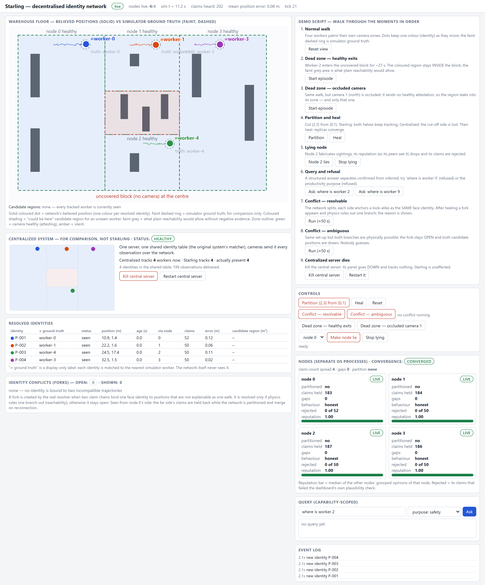
The whole technical view at rest. — captured 12.6s into the run
What you are looking at
Left column: the floor map, the centralized comparison system, the resolved identity table, and identity conflicts. Right column: the scripted demo tour, the fault-injection controls, the four node processes, the query box, and an event log.
What the numbers mean
The layout is fixed; the two columns are independent. Everything updates on a timer (once per second by default).
Served by apps/demo_dashboard/server.py at /engineer. It is a read-only observer: it subscribes to the same gossip the nodes send each other and has no privileged access to any node's database. If you deleted the dashboard, the network would carry on unchanged.
If the examiner asks
Is the dashboard part of the system?
No. It is a passive gossip subscriber — apps/dashboard/observer.py is SUB-only and never participates in anti-entropy. It is a window, not a component. That is a stated architectural rule, not an accident.
The health strip
The always-on health strip. — captured 12.7s into the run
What you are looking at
A single line across the top that tells you whether the system is alive.
What the numbers mean
nodes live — how many of the four node processes are responding. sim t — media time in seconds, i.e. the time the footage depicts, not the wall clock. claims heard — how many claim records the dashboard has overheard in total. mean position error — average distance in metres between where the network thinks each person is and where the simulator actually put them. tick — the dashboard's own refresh counter.
Media time matters more than it looks. The original V1 system processed cameras one after another, so camera 1's timestamps were always later than camera 0's regardless of what actually happened — which made transit times and reachability windows impossible to compute. Every timestamp in the identity path now comes from media time via starling_net/timebase.py, never time.time().
If the examiner asks
Why is mean position error a fair measure?
It is computed against the simulator's ground truth by the dashboard only, for display. It never feeds back into the system. It is a scoreboard, not an input.
What is 'media time'?
The timestamp of the moment the frame depicts. Two nodes replaying the same scenario share a stream_epoch so their media times sit on one timeline. Wall-clock reads are banned from the identity path; the one sanctioned exception is logging a human operator's action, which genuinely happens 'now'.
The floor map
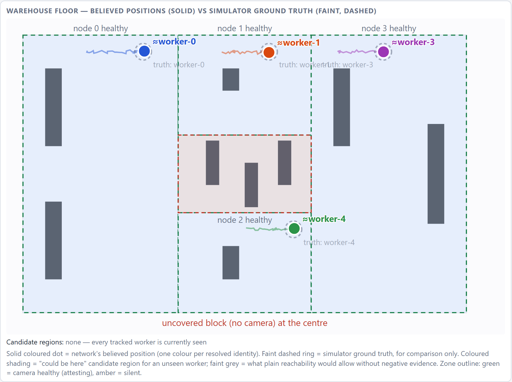
Believed positions vs simulator ground truth. — captured 12.8s into the run
What you are looking at
The warehouse from above. Dashed green rectangles are the four camera zones (amber if that camera has gone silent). Dark grey blocks are racking — solid obstacles. The red dashed box in the middle is floor that no camera covers. Solid coloured dots are where the network believes each person is; the faint dashed rings are the simulator's ground truth, drawn for comparison only.
What the numbers mean
Each identity keeps one colour for as long as it stays one identity. If a dot changes colour, the resolver decided that is a different person. The thin trailing line is that identity's recent path.
The floor is a 2D navmesh — a grid of 0.25 m cells marked walkable or not, built from GeoJSON by NavMesh.from_geojson in packages/starling_geometry/navmesh.py. Distances are geodesic over that grid (8-connected Dijkstra), so a route around a rack is longer than the straight line through it. This is deliberately 2D only — there is no 3D reconstruction anywhere in the project.
If the examiner asks
Why 2D and not 3D?
A pre-committed scope decision. Everything the system needs — reachability, candidate regions, transit times — works on a floor plan. 3D reconstruction was explicitly excluded, not attempted and abandoned.
Why 0.25 m cells?
It sets the resolution of every area and distance. One cell is 0.0625 m², so reported areas are quantised to that. It also appears inside the reachability slack term, so a coarser grid makes the system more permissive — which is the safe direction for a search tool.
Resolved identities
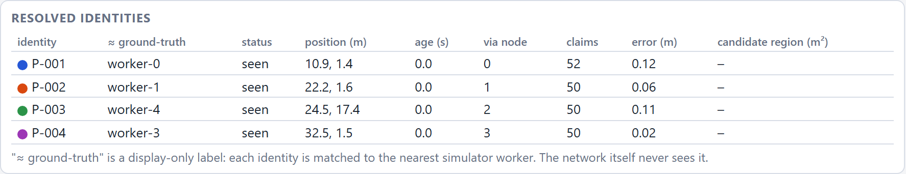
One row per identity the resolver produced. — captured 12.9s into the run
What you are looking at
One row per identity the resolver currently believes in.
What the numbers mean
identity — the internal reference. ≈ ground-truth — a display-only label. status — seen or unseen. position — believed position in metres. age — seconds since the last claim for this identity. via node — which camera contributed that last claim. claims — how many claims are bound to this identity. error — distance from ground truth. candidate region — if unseen, the area they could still be in.
This table is the output of resolve() in packages/starling_crdt/resolver.py. It makes one forward pass over the claims in a fixed total order and binds each claim to an identity. Two rules matter: a claim is only allowed to join an identity if that position is physically reachable from where that identity last was (a hard gate that runs before any appearance comparison), and if the best match is not clearly better than the runner-up, the claim is bound to nothing rather than guessed.
If the examiner asks
Isn't the '≈ ground-truth' column cheating?
It is the single most important thing to be able to answer. It is computed by _update_names in the dashboard's engine: each identity is matched to the nearest simulator worker, and only after several consistent votes. It exists so a human can read the table. It is never passed to the resolver, never gossiped and never influences an assignment. Delete it and the system behaves identically.
What does an identity with no name mean?
A real outcome. A track that fragmented — for instance after a long occlusion — starts a new identity that has not yet collected enough votes to be labelled. The system refusing to put a name to it is correct behaviour, not a bug.
Why would a claim be bound to nothing?
Because two identities scored too similarly. The threshold pair is sim_threshold (is the best match good enough?) and margin_threshold (is it clearly better than the second best?). Both must pass. Ambiguity is surfaced, not resolved by a thin margin.
The four nodes
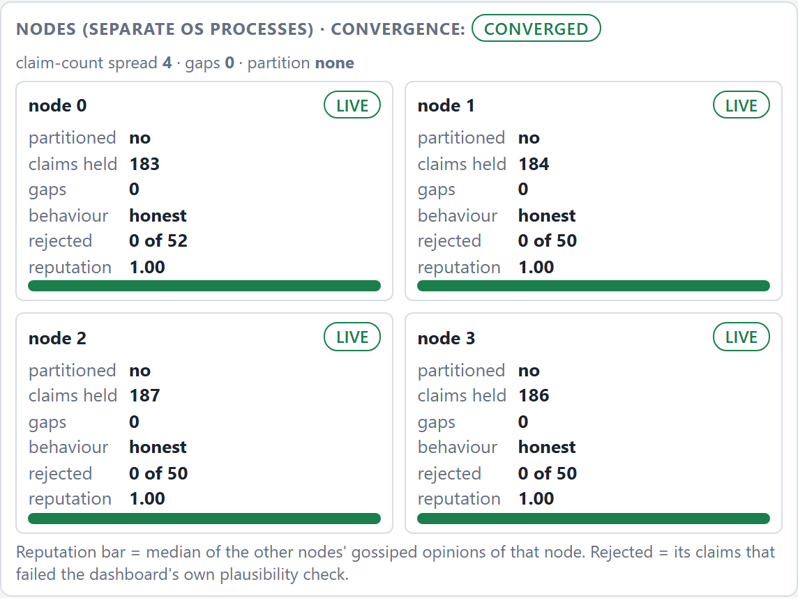
The four node processes and their replicas. — captured 13.0s into the run
What you are looking at
One card per camera node. Each is a separate operating-system process with its own SQLite database and its own network socket.
What the numbers mean
partitioned — is this node currently cut off. claims held — how many claims are in its replica. gaps — how many claims it knows it is missing. behaviour — honest or lying. rejected — how many of its claims failed a plausibility check, out of how many were evaluated. reputation — what the other nodes think of it, 0 to 1. Above the cards: convergence, claim-count spread and total gaps.
A node is a process, never a thread, and no module may read another node's database. Claims spread two ways: live gossip pushes new ones to a configured neighbour set (never a full mesh — that would be a coordinator in disguise), and anti-entropy repairs what gossip missed. Convergence is declared when the spread in claim counts is within tolerance and the total gap count is exactly zero.
If the examiner asks
How do you know these are really separate processes?
They are launched as separate OS processes by scripts/run_demo.py, each with its own database file and port. There is a test — test_node_process_writes_only_its_own_db — that runs a node as a subprocess and asserts it created no other node's directory.
What exactly is a 'gap'?
Each node numbers its own claims 0, 1, 2, … A neighbour might hold 0–2 and 7–9 but be missing 3–6. A simple 'highest number I've seen' summary cannot express that, so nodes exchange runs of sequence numbers, and the spaces between runs are the gaps. Convergence requires zero.
Why must gaps be exactly zero but claim spread only within tolerance?
Because the simulator keeps producing claims while you measure. A small spread just means some claims are still in flight. A gap means something was genuinely lost, so no tolerance is allowed.
The fault injection controls
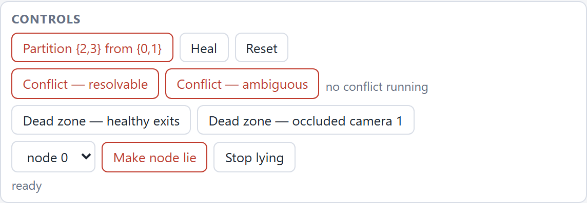
Every fault this demo can inject, by hand. — captured 13.1s into the run
What you are looking at
Every failure this demo can cause, on demand.
What the numbers mean
Partition cuts nodes {2,3} off from {0,1}. Heal reconnects them. Conflict stages two look-alike people, in a resolvable and an ambiguous variant. Dead zone walks someone into the uncovered middle, either with all cameras healthy or with camera 1 blinded. Make node lie turns a chosen node Byzantine.
The partition is an application-level receive-side drop set, not real packet loss — a cut node simply discards messages from the other side. The lying node runs an attack injector that alters its claims before they are signed, so its lies carry a perfectly valid signature from its real enrolled key.
If the examiner asks
If the lies are correctly signed, what is the point of signatures?
Signatures stop node A forging a claim that appears to come from node B. They do nothing about node B itself being compromised and lying with its own key. That gap is precisely why reputation and plausibility checking exist — as the code comment puts it, if signatures were sufficient, reputation would be unnecessary.
The built-in tour
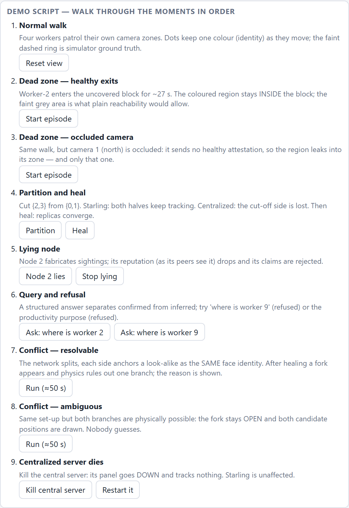
The scripted tour built into the page. — captured 13.2s into the run
What you are looking at
Nine scripted moments with a button each, in the order you would present them.
What the numbers mean
Each step says what to watch for before you press it.
This is the same sequence the automated review harness (scripts/review_demo.py) drives, which is how the eleven review moments are checked without a human clicking.
If the examiner asks
Did you verify these by hand?
No. scripts/review_demo.py drives a real demo in a headless browser, measures each moment against a numeric criterion and writes a PASS/FAIL verdict with screenshots into review/review.html. The last clean run passed all eleven.
The event log
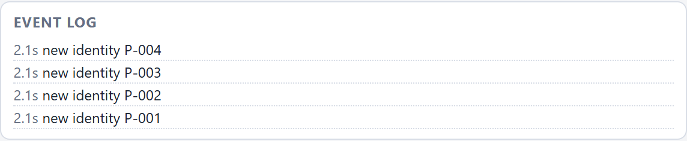
What the system did, in order. — captured 13.3s into the run
What you are looking at
A running list of what the system decided, newest last.
What the numbers mean
Entries appear when an identity is created, goes unseen, is re-seen as the same identity, or when a fork opens.
Useful during a demo for the 're-seen as the same identity' line: that is the system re-attaching a person to the identity they had before they disappeared, rather than inventing a new one.
2. Negative evidence — reasoning from what nobody saw
This is the flagship contribution (C4) and the part most worth being able to explain. The question it answers: when a person walks out of every camera's view, what can you still say about where they are? The naive answer is 'anywhere they could have walked to'. Starling does better — it rules out the areas that healthy cameras positively attest were empty.
Someone disappears, all cameras healthy
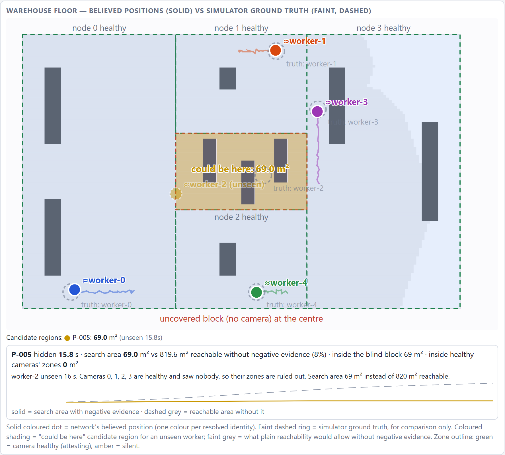
Worker-2 is inside the uncovered block; the region stays inside it. — captured 174.5s into the run
What you are looking at
A worker has walked into the uncovered middle block. The coloured shading is the candidate region — everywhere they could still be. The fainter grey area is what plain reachability would have allowed. Notice the coloured region stays essentially inside the uncovered block.
What the numbers mean
The label on the region reads 'could be here: N m²'. Compare it with the grey area: the ratio is the headline C4 result. In the run below the search area is 69 m² against 819 m² of plain reachability — 8%, and every one of those 69 m² lies inside the uncovered block. The overlap with camera zones is empty: all four cameras are healthy, so every zone is ruled out.
Live values at the moment of this screenshot
sim t = 171.4 s · claims heard = 3390 · nodes live = 4
convergence: CONVERGED spread = 15 gaps = 0
node 0: LIVE, honest, claims=3383, gaps=0, rejected=1/901, reputation=1.00
node 1: LIVE, honest, claims=3383, gaps=0, rejected=0/820, reputation=1.00
node 2: LIVE, honest, claims=3368, gaps=0, rejected=0/828, reputation=1.00
node 3: LIVE, honest, claims=3368, gaps=0, rejected=0/830, reputation=1.00
candidate region P-005: 69.0 m² vs 819.6 m² reachable (8%), unseen 15.8 s
in uncovered block: 69.0 m² · healthy cameras: [0, 1, 2, 3] · silent: []
zone overlap: {}
"worker-2 unseen 16 s. Cameras 0, 1, 2, 3 are healthy and saw nobody, so their zones are ruled out. Search area 69 m² instead of 820 m² reachable."
centralized comparison: HEALTHY tracking 4 · Starling tracking 4 · actually present 5
mean position error = 0.17 m
How it works underneath
The belief starts as a single grid cell at the last confirmed position and grows each tick by geodesic dilation — every cell within v_max × dt walking distance, routed around obstacles, never through walls. Then every camera zone whose node sent a fresh, high-confidence 'my zone was covered and I saw nobody cross' attestation is removed. Crucially those zones are made impassable, not merely subtracted, so the person cannot be assumed to have sneaked through them either.
If the examiner asks
How is this different from just 'they could be anywhere within walking distance'?
That is exactly the grey control area drawn alongside it, and the coloured region is measured against it. The difference is the contribution. The system runs both arms simultaneously — the same dilation with negative evidence switched off — so the comparison is not a claim, it is a measurement.
What stops the region shrinking to nothing incorrectly?
If removing covered zones would empty the belief entirely — because the last sighting was inside a zone that is now attested empty, meaning the person must have left it — the belief is re-seeded at the nearest uncovered cells. Without that, a correct attestation would produce a 0 m² region, which is a false exclusion: telling a search team someone cannot be somewhere they actually are.
Why does the region never leave the uncovered block here?
Because all four cameras are healthy and attesting. Every zone the person might have escaped into is ruled out by a positive statement from the camera watching it. The uncovered block is the irreducible part — no attestation can ever remove it, because no camera watches it.
The numbers behind the shaded area
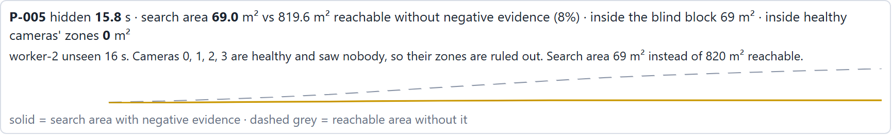
The negative-evidence numbers behind that shaded area. — captured 174.7s into the run
What you are looking at
The card under the map, with a small graph showing both areas over time.
What the numbers mean
search area vs reachable without negative evidence, and the percentage between them — the smaller, the better. inside the blind block — how much lies in genuinely uncovered floor. inside healthy cameras' zones — should be near zero; it is a self-check, because healthy zones are supposed to be fully excluded. The graph: solid line is the search area, dashed grey is what it would have been without negative evidence.
Live values at the moment of this screenshot
sim t = 171.4 s · claims heard = 3398 · nodes live = 4
convergence: CONVERGED spread = 5 gaps = 0
node 0: LIVE, honest, claims=3383, gaps=0, rejected=1/906, reputation=1.00
node 1: LIVE, honest, claims=3383, gaps=0, rejected=0/824, reputation=1.00
node 2: LIVE, honest, claims=3387, gaps=0, rejected=0/833, reputation=1.00
node 3: LIVE, honest, claims=3388, gaps=0, rejected=0/835, reputation=1.00
candidate region P-005: 69.0 m² vs 819.6 m² reachable (8%), unseen 15.8 s
in uncovered block: 69.0 m² · healthy cameras: [0, 1, 2, 3] · silent: []
zone overlap: {}
"worker-2 unseen 16 s. Cameras 0, 1, 2, 3 are healthy and saw nobody, so their zones are ruled out. Search area 69 m² instead of 820 m² reachable."
centralized comparison: HEALTHY tracking 4 · Starling tracking 4 · actually present 5
mean position error = 0.44 m
How it works underneath
Every number here is computed from grid cell counts on the navmesh, and the explanation sentence underneath is assembled mechanically from which nodes were healthy, which were silent, and where the region overlaps — no scenario-specific text is hardcoded.
If the examiner asks
The two lines diverge over time. Why?
Plain reachability grows without bound — the longer someone is missing, the further they could have walked. The negative-evidence area converges instead, because the attested zones keep being removed. That gap widening is the result.
The same walk, but one camera is blinded
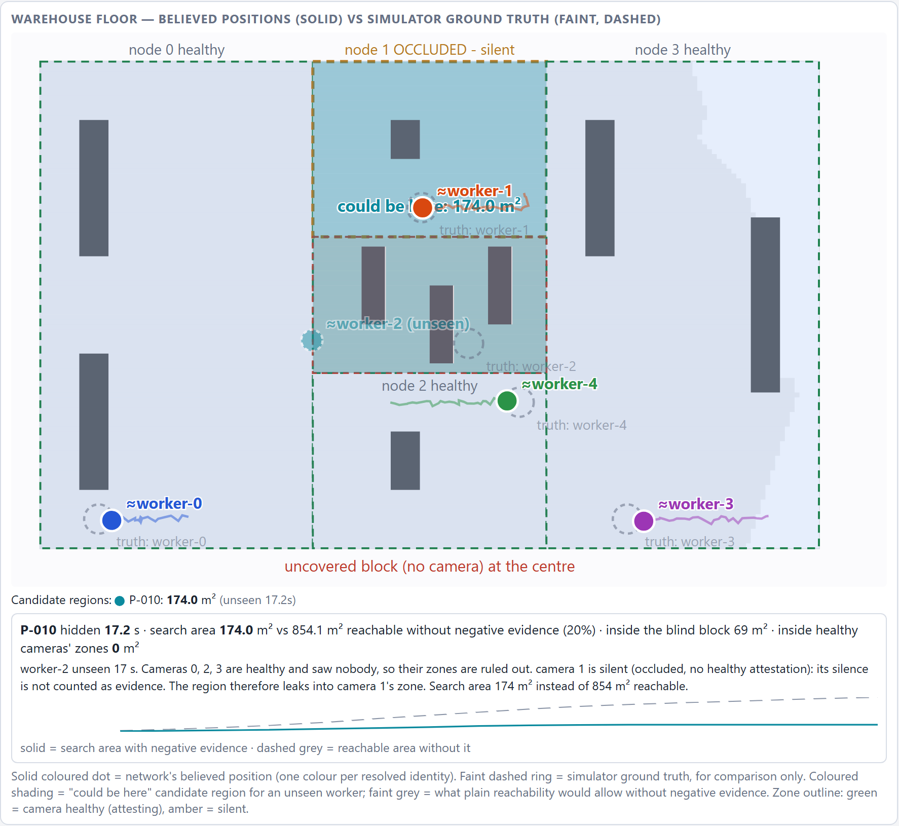
Same walk, camera 1 occluded: the region leaks into its zone only. — captured 311.6s into the run
What you are looking at
Identical scenario, except camera 1's view is blocked. Its zone outline turns amber and is marked silent. The candidate region now leaks into that zone and only that zone.
What the numbers mean
The search area is larger than in the healthy case. Do the arithmetic with the numbers below, because it is the clearest thing you can show an examiner: with all cameras healthy the area was 69 m²; with camera 1 blinded it is 174 m², and the region's overlap with camera 1's zone is 105 m². 69 + 105 = 174. The region grew by exactly the zone that went dark, and by nothing else — the other three zones are still ruled out because those cameras are still attesting.
Live values at the moment of this screenshot
sim t = 307.2 s · claims heard = 6531 · nodes live = 4
convergence: CONVERGED spread = 4 gaps = 0
node 0: LIVE, honest, claims=6513, gaps=0, rejected=17/1904, reputation=1.00
node 1: LIVE, honest, claims=6513, gaps=0, rejected=0/1481, reputation=1.00
node 2: LIVE, honest, claims=6517, gaps=0, rejected=1/1554, reputation=1.00
node 3: LIVE, honest, claims=6517, gaps=0, rejected=1/1585, reputation=1.00
candidate region P-010: 174.0 m² vs 882.3 m² reachable (20%), unseen 18.2 s
in uncovered block: 69.0 m² · healthy cameras: [0, 2, 3] · silent: [1] · occluded: [1]
zone overlap: {'1': 105.0}
"worker-2 unseen 18 s. Cameras 0, 2, 3 are healthy and saw nobody, so their zones are ruled out. camera 1 is silent (occluded, no healthy attestation): its silence is not counted as evidence. The region therefore leaks into camera 1's zone. Search area 174 m² instead of 882 m² reachable."
centralized comparison: HEALTHY tracking 4 · Starling tracking 4 · actually present 5
mean position error = 0.13 m
How it works underneath
This is the rule 'silence is never evidence of absence' made visible. A camera that sends nothing is not saying 'nobody is here' — it is saying nothing at all. So its zone cannot be ruled out, and the person might be in it. The region grows by exactly the area of the zone that went dark, and not by more.
If the examiner asks
Why not assume a silent camera's zone is empty? It usually is.
Because that is the assumption that gets people hurt. A camera is silent precisely when something is wrong — it is blocked, crashed, or cut off. Those are the moments you are least entitled to assume its area is clear. The system treats absence of evidence as absence of evidence.
Where is that rule enforced in the code?
In four independent places, deliberately redundantly: the camera refuses to emit an attestation below the confidence threshold; the gossip layer refuses to admit one; the belief re-checks the conditions itself at the exact point where it is about to erase area; and the zone-mask builder requires the attestation to be the node's latest, fresh, above threshold, and to name its own zone. Any one failing means the zone contributes nothing.
How do you know it leaked into only that zone?
The region card reports the overlap with each camera zone separately. The automated review checks this numerically — it asserts the region overlapped camera 1's zone and no other.
Silence, stated explicitly
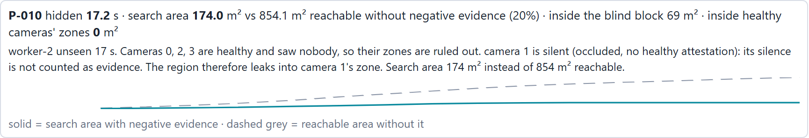
Silence is listed, and explicitly not counted as evidence. — captured 311.7s into the run
What you are looking at
The same card, now naming the silent camera.
What the numbers mean
The generated sentence reads something like: 'camera 1 is silent (occluded, no healthy attestation): its silence is not counted as evidence'.
Live values at the moment of this screenshot
sim t = 307.2 s · claims heard = 6531 · nodes live = 4
convergence: CONVERGED spread = 4 gaps = 0
node 0: LIVE, honest, claims=6513, gaps=0, rejected=17/1904, reputation=1.00
node 1: LIVE, honest, claims=6513, gaps=0, rejected=0/1481, reputation=1.00
node 2: LIVE, honest, claims=6517, gaps=0, rejected=1/1554, reputation=1.00
node 3: LIVE, honest, claims=6517, gaps=0, rejected=1/1585, reputation=1.00
candidate region P-010: 174.0 m² vs 882.3 m² reachable (20%), unseen 18.2 s
in uncovered block: 69.0 m² · healthy cameras: [0, 2, 3] · silent: [1] · occluded: [1]
zone overlap: {'1': 105.0}
"worker-2 unseen 18 s. Cameras 0, 2, 3 are healthy and saw nobody, so their zones are ruled out. camera 1 is silent (occluded, no healthy attestation): its silence is not counted as evidence. The region therefore leaks into camera 1's zone. Search area 174 m² instead of 882 m² reachable."
centralized comparison: HEALTHY tracking 4 · Starling tracking 4 · actually present 5
mean position error = 0.13 m
How it works underneath
That sentence is built from the actual healthy and silent node lists, not written in advance. If a different camera went dark, a different sentence would appear.
If the examiner asks
What makes an attestation 'healthy'?
Four conditions, all required: it names its own zone; it is that node's most recent attestation; its confidence is at or above the threshold; and it is fresh enough. Confidence itself is the minimum of one-minus-occlusion, illumination and detector health — a node is only as trustworthy as its worst faculty. A minimum, not an average, deliberately.
3. Partition tolerance — cutting the network in half
The claim is that Starling has no coordinator. The test is to cut the network and see whether anything stops working.
Before the cut
Before the cut: four replicas in step. — captured 324.3s into the run
What you are looking at
Four nodes, claim counts close together, no gaps, convergence reads CONVERGED.
What the numbers mean
Claim counts will not be identical — claims are still in flight — but the spread is small and gaps are zero.
Cut {2,3} from {0,1}: the replicas drift apart. — captured 339.1s into the run
What you are looking at
Nodes 2 and 3 are cut from 0 and 1. Every card reports partitioned. The claim counts on the two sides drift apart, because neither side is hearing the other's claims.
What the numbers mean
Watch the spread grow. Convergence reads PARTITIONED. Critically, both halves keep tracking the people they can see — nothing waits for permission.
Nodes detect the partition themselves with no heartbeat service: each counts rounds since it last heard from each configured neighbour. Every log line carries a coverage_completeness figure, so a node always knows and always states how blind it currently is.
If the examiner asks
Why doesn't one side stop, or elect a leader?
Because there is nothing to elect. No node has authority the others lack. The claim set is grow-only, so both sides can keep adding to it independently without any possibility of conflict — union is the only operation.
Doesn't the drift mean they disagree?
They hold different evidence, not different conclusions. Each side correctly computes the answer implied by what it knows. When the evidence merges, the answers converge, because the assignment is a pure function of the claim set.
The same partition, on a centralized system
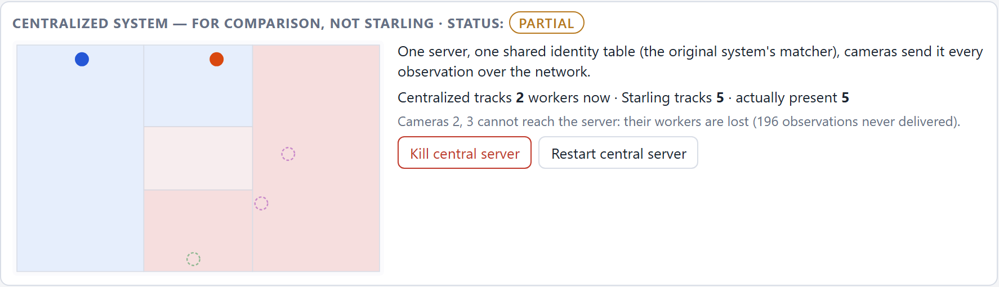
The centralized comparison loses the cut-off cameras' workers. — captured 339.2s into the run
What you are looking at
The comparison panel — one server, one shared identity table, exactly the architecture this project argues against.
What the numbers mean
It reports PARTIAL and tracks fewer workers, naming the cameras that can no longer reach it and counting observations that were never delivered.
This is a real second system running alongside, not a mock-up. It uses the original V1 matcher, preserved as the experimental control for the whole project.
If the examiner asks
Is the comparison fair?
It is the original system this project started from, unmodified, which is the strongest form of the comparison — it is the actual baseline, not a strawman built to lose. Its behaviour was deliberately never changed.
After healing
After healing: converged again, no gaps. — captured 345.2s into the run
Live gossip only reaches whoever is listening at the moment of broadcast, so a reconnecting node would otherwise stay permanently behind. Anti-entropy fixes that: nodes exchange a summary of which sequence ranges they hold, and each sends back what the other is missing, in bounded chunks so a long partition heals over several rounds instead of one enormous message.
If the examiner asks
How do you know the replicas are genuinely identical afterwards?
Unit tests assert it directly — four nodes over a lossy link are driven until their claim sets are byte-identical. On the dashboard, gaps returning to exactly zero is the live signal.
Is this a Merkle tree / CRDT delta sync?
Deliberately not a Merkle tree. At this scale a full version-range diff is enough and much easier to defend. It is honestly a simpler design than the literature default, chosen on purpose.
4. A lying camera — Byzantine robustness
A camera can be compromised. It still holds a valid signing key, so everything it says is correctly signed. The question is what happens when it starts inventing sightings.
All four honest
All four nodes honest; reputation at 1.00. — captured 345.3s into the run
What you are looking at
Every reputation bar full, at 1.00. Rejected counts low.
Node 2 fabricates sightings: reputation falls, rejections climb. — captured 350.9s into the run
What you are looking at
Node 2's card turns amber and reads LYING. Its reputation bar falls; its rejected count climbs quickly. The other three are unaffected.
What the numbers mean
rejected is 'how many of its claims failed the check, out of how many were checked'. It is cumulative, so it never falls — what matters is how fast it climbs. reputation is the median of what the other nodes think, not this dashboard's own opinion. In the run below node 2 goes from reputation 1.00 with 1 rejection in 1723 claims, to 0.69 with 18 rejections, in about five seconds.
A fabricated claim places a person at a random point on the floor. The plausibility check asks first: could this person physically have got there from where they last were, in the time available, walking around the racking? A teleport fails that outright and is rejected before appearance is even considered. Three further graded checks — speed, corroboration by other cameras, and freshness — are blended into a score.
If the examiner asks
Why is reputation a median of peers rather than one number?
Because a single global reputation score would be a coordinator by the back door — someone would have to own it. Each node keeps its own opinion of every other node and gossips it. The figure shown is the median across peers, and the median is itself resistant to a minority of liars.
Does a bad reputation get a node banned?
No. There is no blacklist, no quarantine, no revocation. Reputation is a weight, and it has a floor above zero so a repaired node can always climb back. Be careful to claim only that.
How does the system detect a camera that stays silent about someone it should see?
That is the interesting one, because plausibility checking cannot see a claim that was never sent. It is caught by contradiction: the node keeps attesting 'my zone was healthy and nobody crossed' while two or more other nodes corroborate a crossing in the same window. Be precise here — the code detects and emits that signal, but wiring it into the reputation update is not built.
It stops lying
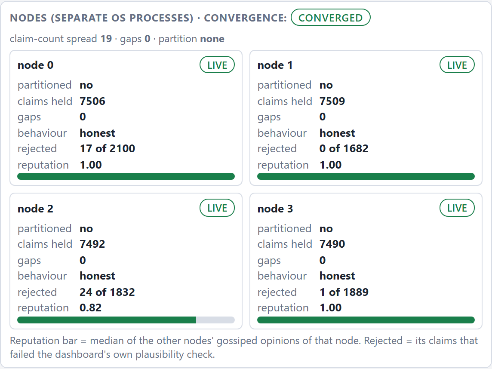
It stops lying and its reputation recovers. — captured 353.9s into the run
What you are looking at
Reputation climbs back toward 1.00 on its own.
What the numbers mean
Recovery takes tens of observations, not instantly.
Reputation is an exponentially weighted moving average. Each honest claim nudges it back up by a fixed fraction. There is no forgiveness timer and no manual reset — recovery is simply the average running forward with good inputs.
If the examiner asks
Isn't automatic forgiveness a vulnerability?
It is a trade-off, and worth stating as one. A permanently condemned node cannot be repaired and returned to service, which in a warehouse is the common case — a camera gets knocked, cleaned, and works again. The floor above zero exists for exactly that.
5. Identity conflicts — when the system refuses to guess
This is the behaviour most likely to impress, because it is the opposite of what most systems do. When the evidence genuinely supports two incompatible stories, Starling keeps both open rather than picking the higher-scoring one.
A conflict that physics can settle
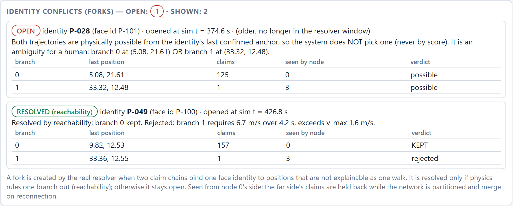
The resolvable conflict, as the resolver reports it. — captured 445.3s into the run
What you are looking at
The network was split, and each side attached the same face identity to a different person. After healing, the resolver sees one identity bound to two incompatible trajectories — a fork. The one to read here is face id P-100, marked RESOLVED (reachability). Note the panel may list two forks: the ambiguous conflict from the previous scenario (face P-101) is still inside the resolver's memory window and correctly remains OPEN. Always check the face id before reading a verdict — that is a genuine trap, and it caught this document's own screenshot tooling once.
What the numbers mean
The explanation names the speed: one branch would have required something like 6.7 m/s over 4.2 s, which exceeds the 1.6 m/s walking limit. On the map the kept branch is solid, the rejected one is crossed out.
Live values at the moment of this screenshot
sim t = 438.8 s · claims heard = 10680 · nodes live = 4
convergence: CONVERGED spread = 17 gaps = 0
node 0: LIVE, honest, claims=10651, gaps=0, rejected=31/3569, reputation=1.00
node 1: LIVE, honest, claims=10641, gaps=0, rejected=0/2122, reputation=1.00
node 2: LIVE, honest, claims=10648, gaps=0, rejected=24/2281, reputation=1.00
node 3: LIVE, honest, claims=10658, gaps=0, rejected=59/2708, reputation=0.83
candidate region P-048: 8.1 m² vs 11.1 m² reachable (73%), unseen 1.6 s
in uncovered block: 8.1 m² · healthy cameras: [0, 1, 2, 3] · silent: []
zone overlap: {}
"worker-8 unseen 2 s. Cameras 0, 1, 2, 3 are healthy and saw nobody, so their zones are ruled out. Search area 8 m² instead of 11 m² reachable."
fork on P-028: OPEN
"Both trajectories are physically possible from the identity's last confirmed anchor, so the system does NOT pick one (never by score). It is an ambiguity for a human: branch 0 at (5.08, 21.61) OR branch 1 at (33.32, 12.48)."
branches: #0 at (5.08, 21.61) with 125 claims, #1 at (33.32, 12.48) with 1 claims
fork on P-049: RESOLVED_REACHABILITY
"Resolved by reachability: branch 0 kept. Rejected: branch 1 requires 6.7 m/s over 4.2 s, exceeds v_max 1.6 m/s."
branches: #0 at (9.82, 12.53) with 157 claims, #1 at (33.36, 12.55) with 1 claims
centralized comparison: HEALTHY tracking 7 · Starling tracking 7 · actually present 7
mean position error = 3.66 m
How it works underneath
Each branch is tested for reachability from the identity's last confirmed position. If exactly one branch survives, the fork closes with a stated reason. The reason is never a bare 'rejected' — it always names the implied speed, so the decision is auditable.
If the examiner asks
Why test from the last confirmed position rather than the most recent one?
Because each individual step is valid, so the most recent tip is always reachable from the previous one — testing there would never detect anything. The last anchored position is the last point the system actually knew who this was, and that is where genuine ambiguity shows up.
The same conflict on the floor
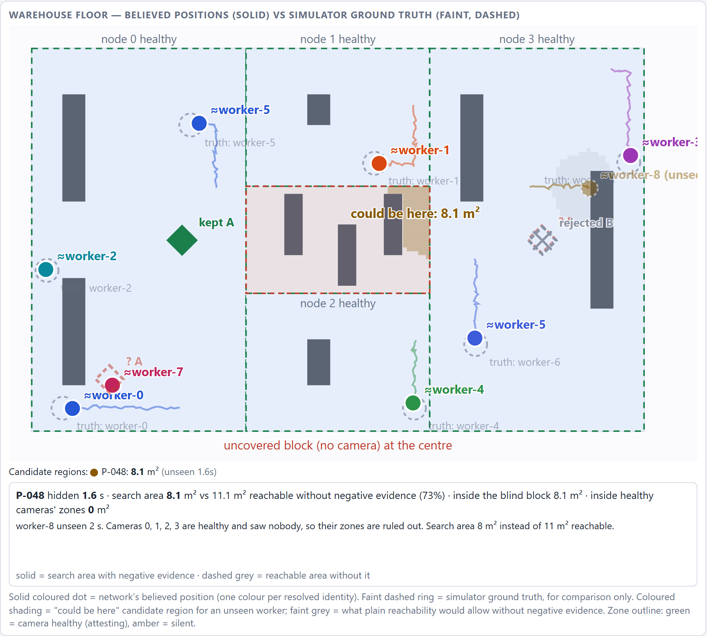
The resolvable conflict's branches drawn on the floor. — captured 445.4s into the run
What you are looking at
Two diamond markers. The kept branch is filled; the rejected one is outlined and struck through.
Live values at the moment of this screenshot
sim t = 438.8 s · claims heard = 10680 · nodes live = 4
convergence: CONVERGED spread = 17 gaps = 0
node 0: LIVE, honest, claims=10651, gaps=0, rejected=31/3569, reputation=1.00
node 1: LIVE, honest, claims=10641, gaps=0, rejected=0/2122, reputation=1.00
node 2: LIVE, honest, claims=10648, gaps=0, rejected=24/2281, reputation=1.00
node 3: LIVE, honest, claims=10658, gaps=0, rejected=59/2708, reputation=0.83
candidate region P-048: 8.1 m² vs 11.1 m² reachable (73%), unseen 1.6 s
in uncovered block: 8.1 m² · healthy cameras: [0, 1, 2, 3] · silent: []
zone overlap: {}
"worker-8 unseen 2 s. Cameras 0, 1, 2, 3 are healthy and saw nobody, so their zones are ruled out. Search area 8 m² instead of 11 m² reachable."
fork on P-028: OPEN
"Both trajectories are physically possible from the identity's last confirmed anchor, so the system does NOT pick one (never by score). It is an ambiguity for a human: branch 0 at (5.08, 21.61) OR branch 1 at (33.32, 12.48)."
branches: #0 at (5.08, 21.61) with 125 claims, #1 at (33.32, 12.48) with 1 claims
fork on P-049: RESOLVED_REACHABILITY
"Resolved by reachability: branch 0 kept. Rejected: branch 1 requires 6.7 m/s over 4.2 s, exceeds v_max 1.6 m/s."
branches: #0 at (9.82, 12.53) with 157 claims, #1 at (33.36, 12.55) with 1 claims
centralized comparison: HEALTHY tracking 7 · Starling tracking 7 · actually present 7
mean position error = 3.66 m
A conflict that physics cannot settle
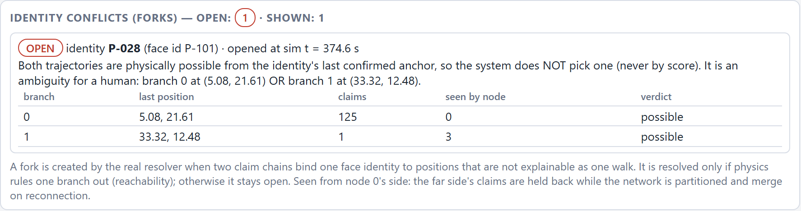
The ambiguous conflict, as the resolver reports it. — captured 399.5s into the run
What you are looking at
The same setup, but both branches are physically possible. The fork is marked OPEN and stays open.
What the numbers mean
Both branches are listed with verdict 'possible'. Neither is chosen. The identity gets no candidate region, because there is no single last position to reason from.
Live values at the moment of this screenshot
sim t = 393.6 s · claims heard = 8944 · nodes live = 4
convergence: CONVERGED spread = 12 gaps = 0
node 0: LIVE, honest, claims=8918, gaps=0, rejected=30/2763, reputation=1.00
node 1: LIVE, honest, claims=8911, gaps=0, rejected=0/1906, reputation=1.00
node 2: LIVE, honest, claims=8914, gaps=0, rejected=24/2066, reputation=1.00
node 3: LIVE, honest, claims=8923, gaps=0, rejected=2/2209, reputation=1.00
candidate region P-010: 69.0 m² vs 932.5 m² reachable (7%), unseen 31.4 s
in uncovered block: 69.0 m² · healthy cameras: [0, 1, 2, 3] · silent: []
zone overlap: {}
"worker-2 unseen 31 s. Cameras 0, 1, 2, 3 are healthy and saw nobody, so their zones are ruled out. Search area 69 m² instead of 932 m² reachable."
candidate region P-047: 69.0 m² vs 923.4 m² reachable (8%), unseen 28.0 s
in uncovered block: 69.0 m² · healthy cameras: [0, 1, 2, 3] · silent: []
zone overlap: {}
"P-047 unseen 28 s. Cameras 0, 1, 2, 3 are healthy and saw nobody, so their zones are ruled out. Search area 69 m² instead of 923 m² reachable."
fork on P-028: OPEN
"Both trajectories are physically possible from the identity's last confirmed anchor, so the system does NOT pick one (never by score). It is an ambiguity for a human: branch 0 at (5.08, 21.61) OR branch 1 at (33.32, 12.48)."
branches: #0 at (5.08, 21.61) with 125 claims, #1 at (33.32, 12.48) with 1 claims
centralized comparison: HEALTHY tracking 6 · Starling tracking 4 · actually present 7
mean position error = 6.77 m
How it works underneath
When zero or more than one branch survives the reachability test, the fork stays open. There is no tie-break by score anywhere in the code. It can later be closed by a new face anchor that positively continues one branch, or by an operator — but never by the system picking a winner on confidence.
If the examiner asks
Isn't refusing to answer just a cop-out?
For a safety system it is the correct failure mode. If two stories are equally consistent with the evidence, picking one at, say, 51% confidence means being confidently wrong half the time — and a search team acts on that answer. Surfacing 'these two are both possible, go and look' is more useful and more honest.
Would it ever merge two different people?
That is the failure mode measured in the ablation, and it was effectively zero everywhere except under the deliberately punishing 'harsh' profile. The system splits identities under pressure far more readily than it merges them, which for a safety tool is the right way round to fail.
How can two replicas agree on a fork with no coordinator?
A fork's id is a hash of the identity plus its branches' claim ids, sorted first. Two nodes holding the same claims compute the same id independently — the same trick as the assignment itself.
Both possibilities drawn
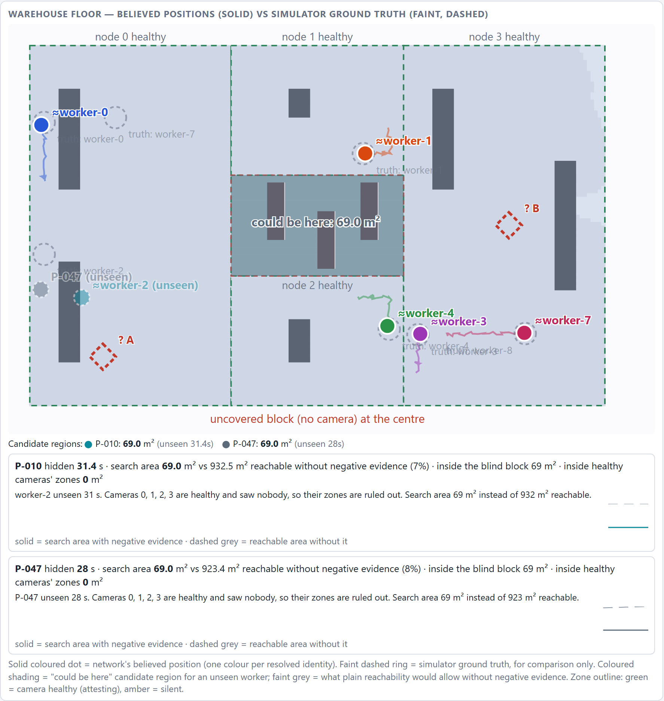
The ambiguous conflict's branches drawn on the floor. — captured 399.7s into the run
What you are looking at
Two open diamonds, both dashed, both labelled with a question mark. The system is showing you its uncertainty instead of hiding it.
Live values at the moment of this screenshot
sim t = 393.6 s · claims heard = 8944 · nodes live = 4
convergence: CONVERGED spread = 12 gaps = 0
node 0: LIVE, honest, claims=8918, gaps=0, rejected=30/2763, reputation=1.00
node 1: LIVE, honest, claims=8911, gaps=0, rejected=0/1906, reputation=1.00
node 2: LIVE, honest, claims=8914, gaps=0, rejected=24/2066, reputation=1.00
node 3: LIVE, honest, claims=8923, gaps=0, rejected=2/2209, reputation=1.00
candidate region P-010: 69.0 m² vs 932.5 m² reachable (7%), unseen 31.4 s
in uncovered block: 69.0 m² · healthy cameras: [0, 1, 2, 3] · silent: []
zone overlap: {}
"worker-2 unseen 31 s. Cameras 0, 1, 2, 3 are healthy and saw nobody, so their zones are ruled out. Search area 69 m² instead of 932 m² reachable."
candidate region P-047: 69.0 m² vs 923.4 m² reachable (8%), unseen 28.0 s
in uncovered block: 69.0 m² · healthy cameras: [0, 1, 2, 3] · silent: []
zone overlap: {}
"P-047 unseen 28 s. Cameras 0, 1, 2, 3 are healthy and saw nobody, so their zones are ruled out. Search area 69 m² instead of 923 m² reachable."
fork on P-028: OPEN
"Both trajectories are physically possible from the identity's last confirmed anchor, so the system does NOT pick one (never by score). It is an ambiguity for a human: branch 0 at (5.08, 21.61) OR branch 1 at (33.32, 12.48)."
branches: #0 at (5.08, 21.61) with 125 claims, #1 at (33.32, 12.48) with 1 claims
centralized comparison: HEALTHY tracking 6 · Starling tracking 4 · actually present 7
mean position error = 6.77 m
6. Asking questions, and being refused
A minimal structured query interface. Its interesting property is not what it answers but what it declines to answer, and why.
A question it will answer
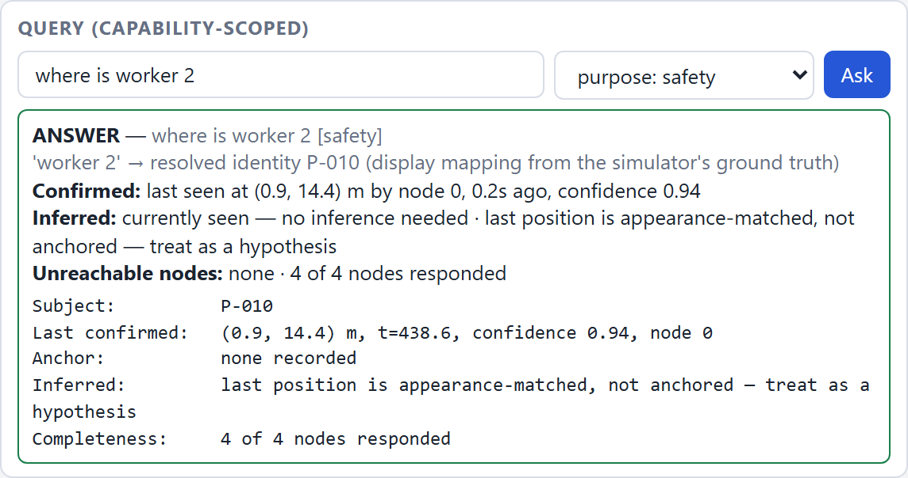
A valid query: confirmed and inferred kept apart. — captured 447.4s into the run
What you are looking at
The answer is split into Confirmed and Inferred, kept visibly apart.
What the numbers mean
Confirmed: last actually seen at a position, by a named camera, how long ago, with what confidence. Inferred: if currently unseen, the candidate region area. It also reports how many nodes responded and which were unreachable.
Live values at the moment of this screenshot
sim t = 440.6 s · claims heard = 10750 · nodes live = 4
convergence: CONVERGED spread = 12 gaps = 0
node 0: LIVE, honest, claims=10722, gaps=0, rejected=31/3596, reputation=1.00
node 1: LIVE, honest, claims=10715, gaps=0, rejected=0/2131, reputation=1.00
node 2: LIVE, honest, claims=10718, gaps=0, rejected=24/2290, reputation=1.00
node 3: LIVE, honest, claims=10727, gaps=0, rejected=59/2726, reputation=0.93
candidate region P-048: 22.2 m² vs 56.4 m² reachable (39%), unseen 3.4 s
in uncovered block: 22.2 m² · healthy cameras: [0, 1, 2, 3] · silent: []
zone overlap: {}
"worker-8 unseen 3 s. Cameras 0, 1, 2, 3 are healthy and saw nobody, so their zones are ruled out. Search area 22 m² instead of 56 m² reachable."
fork on P-028: OPEN
"Both trajectories are physically possible from the identity's last confirmed anchor, so the system does NOT pick one (never by score). It is an ambiguity for a human: branch 0 at (5.08, 21.61) OR branch 1 at (33.32, 12.48)."
branches: #0 at (5.08, 21.61) with 125 claims, #1 at (33.32, 12.48) with 1 claims
fork on P-108: RESOLVED_REACHABILITY
"Resolved by reachability: branch 0 kept. Rejected: branch 1 requires 6.7 m/s over 4.2 s, exceeds v_max 1.6 m/s."
branches: #0 at (7.18, 14.13) with 1 claims, #1 at (33.36, 12.55) with 1 claims
centralized comparison: HEALTHY tracking 7 · Starling tracking 7 · actually present 7
mean position error = 0.35 m
How it works underneath
Separating confirmed from inferred is the whole point. A single blended answer would let a guess masquerade as an observation.
If the examiner asks
Why report unreachable nodes in the answer?
So the answer carries its own caveat. If two cameras could not be reached, the answer is based on partial evidence and says so, rather than quietly presenting itself as complete.
Refused — nobody by that name
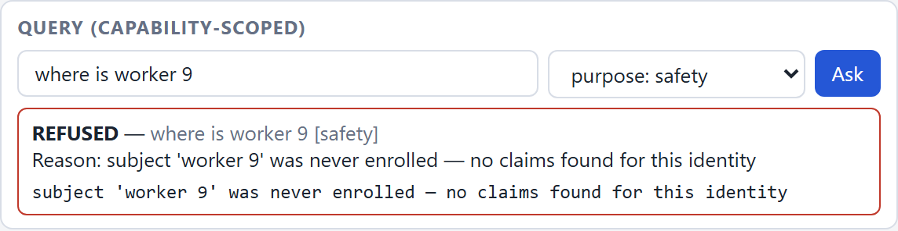
Nobody by that name: refused, with the reason. — captured 449.3s into the run
What you are looking at
REFUSED, with a stated reason.
Live values at the moment of this screenshot
sim t = 442.8 s · claims heard = 10820 · nodes live = 4
convergence: CONVERGED spread = 13 gaps = 0
node 0: LIVE, honest, claims=10792, gaps=0, rejected=31/3626, reputation=1.00
node 1: LIVE, honest, claims=10785, gaps=0, rejected=0/2141, reputation=1.00
node 2: LIVE, honest, claims=10788, gaps=0, rejected=24/2300, reputation=1.00
node 3: LIVE, honest, claims=10798, gaps=0, rejected=59/2746, reputation=0.97
candidate region P-048: 40.9 m² vs 138.8 m² reachable (30%), unseen 5.6 s
in uncovered block: 40.9 m² · healthy cameras: [0, 1, 2, 3] · silent: []
zone overlap: {}
"worker-8 unseen 6 s. Cameras 0, 1, 2, 3 are healthy and saw nobody, so their zones are ruled out. Search area 41 m² instead of 139 m² reachable."
fork on P-028: OPEN
"Both trajectories are physically possible from the identity's last confirmed anchor, so the system does NOT pick one (never by score). It is an ambiguity for a human: branch 0 at (5.08, 21.61) OR branch 1 at (33.32, 12.48)."
branches: #0 at (5.08, 21.61) with 125 claims, #1 at (33.32, 12.48) with 1 claims
fork on P-108: RESOLVED_REACHABILITY
"Resolved by reachability: branch 0 kept. Rejected: branch 1 requires 6.7 m/s over 4.2 s, exceeds v_max 1.6 m/s."
branches: #0 at (7.18, 14.13) with 1 claims, #1 at (33.36, 12.55) with 1 claims
centralized comparison: HEALTHY tracking 6 · Starling tracking 7 · actually present 7
mean position error = 0.32 m
How it works underneath
It does not invent a plausible answer or return the nearest match.
Refused — wrong purpose
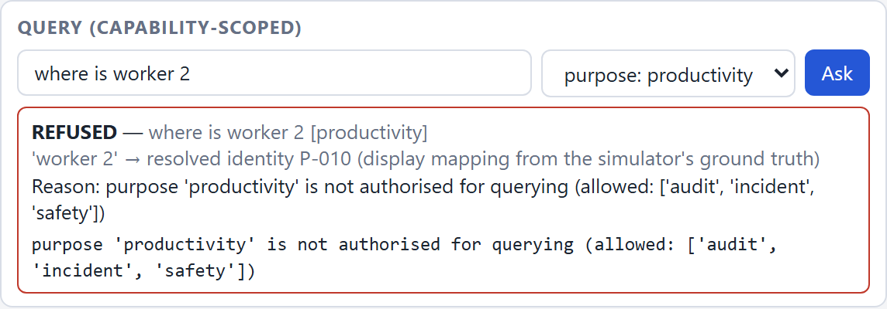
Same question, wrong purpose: refused. — captured 451.3s into the run
What you are looking at
The same question that was answered a moment ago, now refused because the query carries a 'productivity' purpose instead of 'safety'.
Live values at the moment of this screenshot
sim t = 444.8 s · claims heard = 10887 · nodes live = 4
convergence: CONVERGED spread = 11 gaps = 0
node 0: LIVE, honest, claims=10861, gaps=0, rejected=31/3655, reputation=1.00
node 1: LIVE, honest, claims=10854, gaps=0, rejected=0/2151, reputation=1.00
node 2: LIVE, honest, claims=10857, gaps=0, rejected=24/2310, reputation=1.00
node 3: LIVE, honest, claims=10865, gaps=0, rejected=59/2764, reputation=0.99
candidate region P-048: 55.9 m² vs 223.2 m² reachable (25%), unseen 7.6 s
in uncovered block: 55.9 m² · healthy cameras: [0, 1, 2, 3] · silent: []
zone overlap: {}
"worker-8 unseen 8 s. Cameras 0, 1, 2, 3 are healthy and saw nobody, so their zones are ruled out. Search area 56 m² instead of 223 m² reachable."
fork on P-028: OPEN
"Both trajectories are physically possible from the identity's last confirmed anchor, so the system does NOT pick one (never by score). It is an ambiguity for a human: branch 0 at (5.08, 21.61) OR branch 1 at (33.32, 12.48)."
branches: #0 at (5.08, 21.61) with 125 claims, #1 at (33.32, 12.48) with 1 claims
fork on P-108: RESOLVED_REACHABILITY
"Resolved by reachability: branch 0 kept. Rejected: branch 1 requires 6.7 m/s over 4.2 s, exceeds v_max 1.6 m/s."
branches: #0 at (7.18, 14.13) with 1 claims, #1 at (33.36, 12.55) with 1 claims
centralized comparison: HEALTHY tracking 6 · Starling tracking 7 · actually present 7
mean position error = 0.37 m
How it works underneath
Queries are capability-scoped: the token states a purpose, and a location query that is legitimate for safety is refused for productivity monitoring. This is a deliberate design position about what the system is for.
If the examiner asks
Is this enforced or cosmetic?
It is enforced at the query layer, and it is a small scope — be honest that it is a structured CLI-style stub, not a full natural-language interface. A full LLM query interface was explicitly excluded from scope.
7. Why not just use one server?
The comparison that justifies the entire architecture.
The centralized system, working
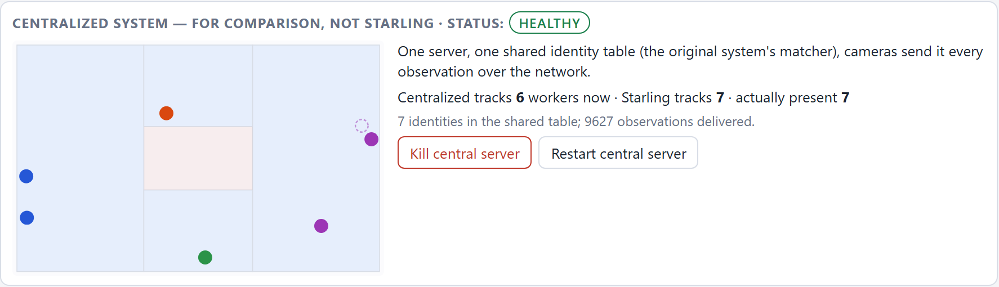
The centralized baseline, working normally. — captured 451.4s into the run
What you are looking at
When nothing is wrong, it works fine — and that is worth conceding immediately.
What the numbers mean
It tracks roughly the right number of workers — though note in the capture below it reports 6 while 7 people are actually present, so it was already imperfect before anything was broken. Say that out loud rather than overselling the comparison.
Live values at the moment of this screenshot
sim t = 444.8 s · claims heard = 10887 · nodes live = 4
convergence: CONVERGED spread = 11 gaps = 0
node 0: LIVE, honest, claims=10861, gaps=0, rejected=31/3655, reputation=1.00
node 1: LIVE, honest, claims=10854, gaps=0, rejected=0/2151, reputation=1.00
node 2: LIVE, honest, claims=10857, gaps=0, rejected=24/2310, reputation=1.00
node 3: LIVE, honest, claims=10865, gaps=0, rejected=59/2764, reputation=0.99
candidate region P-048: 55.9 m² vs 223.2 m² reachable (25%), unseen 7.6 s
in uncovered block: 55.9 m² · healthy cameras: [0, 1, 2, 3] · silent: []
zone overlap: {}
"worker-8 unseen 8 s. Cameras 0, 1, 2, 3 are healthy and saw nobody, so their zones are ruled out. Search area 56 m² instead of 223 m² reachable."
fork on P-028: OPEN
"Both trajectories are physically possible from the identity's last confirmed anchor, so the system does NOT pick one (never by score). It is an ambiguity for a human: branch 0 at (5.08, 21.61) OR branch 1 at (33.32, 12.48)."
branches: #0 at (5.08, 21.61) with 125 claims, #1 at (33.32, 12.48) with 1 claims
fork on P-108: RESOLVED_REACHABILITY
"Resolved by reachability: branch 0 kept. Rejected: branch 1 requires 6.7 m/s over 4.2 s, exceeds v_max 1.6 m/s."
branches: #0 at (7.18, 14.13) with 1 claims, #1 at (33.36, 12.55) with 1 claims
centralized comparison: HEALTHY tracking 6 · Starling tracking 7 · actually present 7
mean position error = 0.37 m
If the examiner asks
So the centralized system is fine?
When the network is healthy, yes — and saying so makes the rest of the argument credible. The difference only appears under failure, which is exactly when a safety system matters.
The server is killed
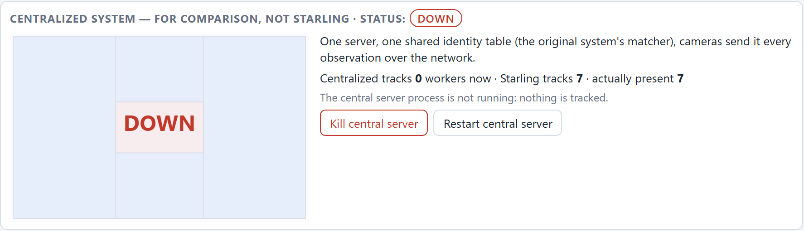
Server killed: it tracks nobody. Starling is unaffected. — captured 461.3s into the run
What you are looking at
Status DOWN. It tracks nobody at all.
What the numbers mean
Tracked drops to zero.
Live values at the moment of this screenshot
sim t = 454.8 s · claims heard = 11221 · nodes live = 4
convergence: CONVERGED spread = 13 gaps = 0
node 0: LIVE, honest, claims=11201, gaps=0, rejected=31/3792, reputation=1.00
node 1: LIVE, honest, claims=11194, gaps=0, rejected=0/2197, reputation=1.00
node 2: LIVE, honest, claims=11198, gaps=0, rejected=24/2353, reputation=1.00
node 3: LIVE, honest, claims=11207, gaps=0, rejected=60/2854, reputation=0.95
candidate region P-048: 69.0 m² vs 640.1 m² reachable (11%), unseen 17.6 s
in uncovered block: 69.0 m² · healthy cameras: [0, 1, 2, 3] · silent: []
zone overlap: {}
"worker-8 unseen 18 s. Cameras 0, 1, 2, 3 are healthy and saw nobody, so their zones are ruled out. Search area 69 m² instead of 640 m² reachable."
fork on P-028: OPEN
"Both trajectories are physically possible from the identity's last confirmed anchor, so the system does NOT pick one (never by score). It is an ambiguity for a human: branch 0 at (5.08, 21.61) OR branch 1 at (33.32, 12.48)."
branches: #0 at (5.08, 21.61) with 125 claims, #1 at (33.32, 12.48) with 1 claims
fork on P-108: RESOLVED_REACHABILITY
"Resolved by reachability: branch 0 kept. Rejected: branch 1 requires 6.7 m/s over 4.2 s, exceeds v_max 1.6 m/s."
branches: #0 at (7.18, 14.13) with 1 claims, #1 at (33.36, 12.55) with 1 claims
centralized comparison: DOWN tracking 0 · Starling tracking 7 · actually present 7
mean position error = 0.23 m
How it works underneath
One process held all the state; killing it destroys the service.
Starling at the same instant
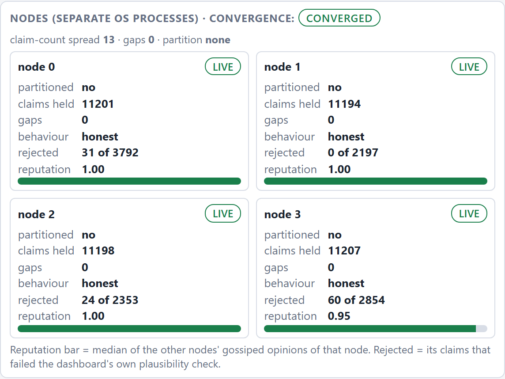
The same instant on Starling's side. — captured 461.4s into the run
What you are looking at
Unaffected. Still converged, still tracking everyone, claim count still climbing.
What the numbers mean
Compare the claim total with the previous shot's — it keeps growing while the centralized system is dead.
Live values at the moment of this screenshot
sim t = 454.8 s · claims heard = 11228 · nodes live = 4
convergence: CONVERGED spread = 13 gaps = 0
node 0: LIVE, honest, claims=11201, gaps=0, rejected=31/3792, reputation=1.00
node 1: LIVE, honest, claims=11194, gaps=0, rejected=0/2197, reputation=1.00
node 2: LIVE, honest, claims=11198, gaps=0, rejected=24/2353, reputation=1.00
node 3: LIVE, honest, claims=11207, gaps=0, rejected=60/2854, reputation=0.95
candidate region P-048: 69.0 m² vs 640.1 m² reachable (11%), unseen 17.6 s
in uncovered block: 69.0 m² · healthy cameras: [0, 1, 2, 3] · silent: []
zone overlap: {}
"worker-8 unseen 18 s. Cameras 0, 1, 2, 3 are healthy and saw nobody, so their zones are ruled out. Search area 69 m² instead of 640 m² reachable."
fork on P-028: OPEN
"Both trajectories are physically possible from the identity's last confirmed anchor, so the system does NOT pick one (never by score). It is an ambiguity for a human: branch 0 at (5.08, 21.61) OR branch 1 at (33.32, 12.48)."
branches: #0 at (5.08, 21.61) with 125 claims, #1 at (33.32, 12.48) with 1 claims
fork on P-108: RESOLVED_REACHABILITY
"Resolved by reachability: branch 0 kept. Rejected: branch 1 requires 6.7 m/s over 4.2 s, exceeds v_max 1.6 m/s."
branches: #0 at (7.18, 14.13) with 1 claims, #1 at (33.36, 12.55) with 1 claims
centralized comparison: DOWN tracking 0 · Starling tracking 7 · actually present 7
mean position error = 0.34 m
How it works underneath
There is no equivalent process to kill. Every node holds a full replica and computes the answer itself.
If the examiner asks
What is the equivalent single point of failure in Starling?
There isn't one for the identity function — but be precise rather than triumphant. This demo has a simulator process feeding all four nodes, and the dashboard is a single page. Neither is part of the identity path, but in a real deployment the cameras would be the sources and both would be absent.
8. What is not built, and honest weaknesses
An examiner will trust you more for volunteering these than for being caught by them. Every item
here was verified against the code, not guessed.
Things that are built but not wired in
The four aggregation methods (unweighted, reputation-weighted, trimmed-mean, Krum) are
implemented and measured by the Byzantine sweep, but they are not used in the live node loop.
They exist to be ablated against each other, and the results are in docs/results_c2.md.
Do not claim the running system uses Krum.
Reputation is not fed into the running node's identity resolution. Nodes compute and
gossip reputation, and the dashboard uses it when it resolves, but there is no call path from a
node's own reputation table into its own resolve().
The attestation reputation floor is inert — its threshold defaults to 0.0.
Detecting a lie by omission emits a signal, but nothing consumes it to update reputation.
Incremental resolution exists and is tested, but has no production caller; the live code
resolves over its own window instead.
Honest weaknesses in the approach
Claims are pruned after a retention window. That weakens the guarantee from unconditional
strong eventual consistency to eventual consistency within the retention window: two replicas
separated for longer than the window may never fully re-converge. It is a deliberate trade-off that
doubles as a privacy measure, but state it as a limitation, not a feature.
The candidate belief is an indicator, not a probability density. Each cell is in or out;
there is no Bayesian weighting. Every number reported depends only on which cells are in the set, so
this is sound, but do not describe it as a particle filter — it is not one.
Signature verification does not happen on the dashboard's belief path. The belief re-checks
confidence and freshness itself, but not the signature.
Sybil attacks are explicitly out of scope. Keys are enrolled out of band at commissioning.
The scheme defends against an enrolled node lying, not against an attacker who can mint new
identities.
Identity fragmentation under realistic conditions is real. Measured at about 3.4 identities
per worker, with 97.5% of a worker's claims still on one identity — the rest are short-lived
splinters after occlusions. About 38% of claims are left unassigned, which is the resolver correctly
refusing to guess, but it is a large fraction.
An inconsistency to fix or be ready to explain
The match threshold was calibrated from a measured ROC curve to 0.32, and the configs the
demo actually loads carry that value with a threshold_source recording how it was
derived. However the class default in packages/starling_node/config.py still reads
0.60 with threshold_source: "UNCALIBRATED-GUESS". An examiner who greps the
code will find the stale string and it will look like the calibration never happened. The running
system uses 0.32; the default is simply out of date.
Scope that was deliberately never attempted
3D reconstruction — 2D navmesh only, pre-committed.
A full natural-language query interface — a structured stub only.
9. Glossary
Term
Meaning
Claim
One signed record: a camera saw a person at a position at a media time, with an appearance vector. The only thing that travels between nodes.
Grow-only set (G-Set)
A set that only ever has things added. Merging is union, so it is idempotent, commutative and associative — you can merge in any order, any number of times, and get the same result. That is why partitions are harmless.
CRDT
Conflict-free replicated data type. A structure that can be updated independently on many machines and merged without conflict resolution. Here it is the claim set.
Resolver
The pure function that turns a set of claims into identity assignments. Same claims in, same answer out, on every node.
Anchor
A claim carrying a positive identification (a face), which binds an identity directly rather than by appearance similarity.
Fork
One identity bound to two trajectories that cannot both be one person's walk.
HLC (hybrid logical clock)
A timestamp combining a physical millisecond count with a logical counter, so ordering stays consistent even if clocks disagree or go backwards.
Media time
The time the footage depicts, as opposed to the wall clock. All identity-path timestamps use it.
Anti-entropy
The repair protocol: nodes compare which sequence ranges they hold and send each other what is missing.
Gap / hole
A missing run of sequence numbers in a node's replica. Convergence requires zero.
Attestation
A signed statement from a camera: 'my zone was covered and healthy for this interval, and nobody crossed'. The basis of negative evidence.
Candidate region
The area an unseen person could still be in, after ruling out zones that healthy cameras attest were empty.
Navmesh
The floor as a grid of walkable cells, used for geodesic distance and reachability.
Reachability gate
A hard check: could this person physically have got here from where they were, in the time available? Runs before any appearance comparison.
Plausibility check
The Byzantine filter applied to incoming claims: reachability (hard fail), then speed, corroboration and freshness blended into a score.
Reputation
Each node's own opinion of each other node, gossiped. The displayed figure is the median of peers' opinions.
10. The five questions to rehearse
If you can answer these five without notes, you can hold a conversation about this project with anyone.
In one sentence, what is novel here?
Identity is treated as a conflict-free replicated data type where only evidence is replicated and the assignment is recomputed identically everywhere — and on top of that, the system reasons from attested absence, so it can narrow down where a person is using cameras that saw nothing.
Where is the coordinator hiding?
Nowhere, and the way to show it is to name what a coordinator would have to own: the identity assignment. That is precisely the one thing never transmitted. Gossip goes to a configured neighbour set rather than a full mesh for the same reason — a full mesh is a coordinator in disguise.
What would break this system?
A partition lasting longer than the claim retention window, because pruned claims can no longer be exchanged. Also an attacker able to enrol new keys, which is out of scope by design. And identity fragmentation degrades badly under camera conditions worse than published re-identification benchmarks.
How do you know any of this works?
Three independent layers. Unit and property tests, including randomised tests that assert the resolver gives the same answer under any claim ordering. An automated review that drives a real four-process demo in a browser and scores eleven scenarios with numeric criteria. And offline experiments with written-up results for the Byzantine sweep, the negative-evidence measurements and the threshold calibration.
What is the weakest part?
Answer this one honestly and it will help you. Several components are measured in harnesses rather than wired into the live node loop — the aggregation methods especially. And the identity resolver fragments tracks under realistic camera conditions more than it should.